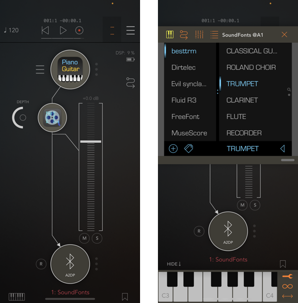

View on GitHub
View on GitHub Reference
Reference


SoundFonts App
🥳 Check it out on Apple’s App Store

This is an iOS (and soon-to-be macOS!) application that acts as a polyphonic synthesizer. It uses anAVAudioUnitSampler
instance to generate the sounds for touched keys. The sounds that are avaiable come from sound font files such
as those available online for free (and of variable
quaility). There are four sound font files that are bundled with the application, and more can be added via the iCloud
integration.
NOTE: AVAudioUnitSampler can and will crash if the SoundFont patch it is using for rendering does not conform to spec. Unfortunately, there is no way to insulate the app from this so it too will crash along with AVAudioUnitSampler.
I have also curated a small collection of SoundFont files that I found useful and/or interesting: Sample SoundFonts. If you visit the site from your iOS device and touch one of the links, you can add the fire directly to the SoundFonts application.
Here are some additional sites that have curated or custom SF2 files that should work with the application:
AUv3 App Extension
Starting with v2.0, the application now contains an AUv3 app extension that can be loaded by other music applications that support AUv3 audio units, such as GarageBand and AUM.

User Interface
Here is what you can do with it:
- Switch between the patches view (image above) and a favorites view (see below) by swiping left/right on the upper view with two touches.
- Double-tapping the patch name in the info bar above the keyboard will also switch the upper view
- You can touch the labels at either end of the black bar to change the range of the keyboard. In the image above, the first key is at “C4” and the last key shown is “G5”. You can go as low as “C0” and as high as “C9”.
- You can also swipe with a finger on back bar to change the keyboard range
- Swipe right on a patch name to make it a favorite (same to unfavorite). Favorited patches have a star next to their name.
- Add/Remove sound font files. In the “patches view” press the “+” button to bring up a file picker. Locate a sound font file to add from a location on your device, or from your iCloud drive or Google Drive. Added files can be removed via the “-” button or a left-swipe on the sound font name.
Notes on Adding From Cloud Drives
Files app (iCloud) — long-press on the file you want to import, select “Share” option. You should then be able to select “Copy to SoundFonts” from the sharing sheet that appears.
Google Drive — touch the “•••” button next to the file name and then choose “Open in” from the list of available options. You should then be able to select “Copy to SoundFonts” from the sharing sheet that appears.
Dropbox — touch on the circled “•••” button below the file you want to import. Choose “Copy Link” option that appears. Select “Open In…” and then “Copy to SoundFonts” from the sharing sheet that appears.
Unfortunately as far as I can tell there is no way to import directly from a web page with a native SF2 URL link. One must first have the file available on a cloud drive before it can be imported via the iOS sharing sheet.
Favorites
The favorites view shows all of the patches that have been “faved” or “starred”. Pressing on a favorite will make its associated patch active. You can also reorder them by long-touching one and moving it to a new location among the others. You can also change the starting key of the keyboard in the favorite as well as gain and stereo pan settings that will apply when the favorite is touched. To edit a favorite, double-tap on the it and you should see an edit view:

Nothing fancy. Note that the gain is not exactly like a volume. By default, it will be at 0.0 which means that
there is no gain applied to the synthesizer output. Positive values (max +12) will boost the signal, while
negative values (min -90) will reduce it. Note that these are the min/max values supported by the
AVAudioUnitSampler.
The pan value is normally at 0.0. Moving to -1.0 should place the output entirely in the left speaker, while a +1.0 will place it all in the right.
Dependencies
There are no external dependencies. I wrote the code in Xcode 10.1, targeting iOS 12.1.
The keys of the keyboard are painted by the code found in KeyboardRender.swift. This was generated by the
PaintCode application. The PaintCode file is Keyboard.pcvd, but it is not part
of the build process and PaintCode is not necessary to build.
Embedded Sound Fonts
The repository comes with four SoundFont files, though the largest one – FluidR3_GM – is too large to store
natively on Github so it has been broken into three files: FluidR3_GM.sf2.1, FluidR3_GM.sf2.2, and
FluidR3_GM.sf2.3. I could move it to LFS but I do not want to mess with that. Instead, I have an Xcode build
phaase that should concatenate the individual files into one big one before packaging them all up into a
resource in the SF2Files target.
API Documentation
If you are interested, there is some developer documentation available.